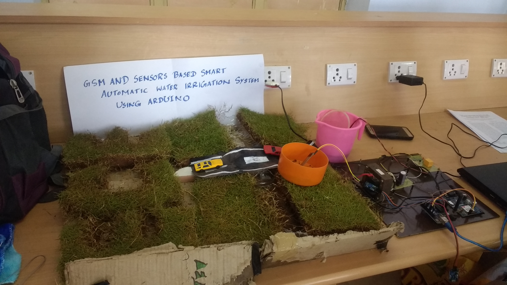
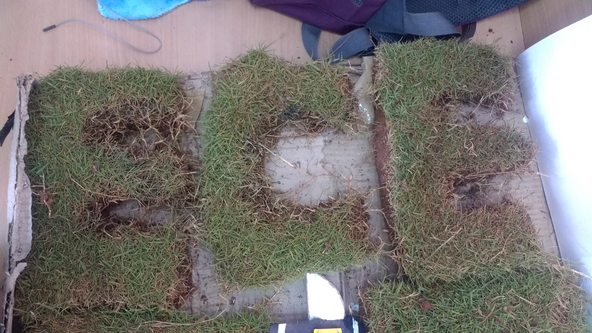

AUTOMATIC IRRIGATION SYSTEM USING ARDUINO UNO
Abstract:
Nowadays it is a challenge to improve development of plant in respect of its growth and to reduce costs which leads to an innovative idea of using an automated irrigation system which will further help in better management of water and human resources. An automated irrigation system have been developed using sensors technology with arduino to efficiently utilize water for irrigation purpose. The system has soil moisture sensor inserted into the soil of the plants and a water level sensor placed in the field to measure the water level of the soil.
Introduction:
The main aim of this project was to provide water to the plants or gardening automatically using arduino uno. We can automatically water the plants when we are going on vacation or don't we have to bother my neighbours. somtimes the up dying anyway. There are timer based devices available in india which waters the soil on the set interval. they do not sense the soil moisture and the ambient temperature to know if the soil actually needs watering or not. Assimilation is that the artificial application of water to the land or soil. It is used to assist in the growing of agricultural crops maintenance of landscapes and re-vegetation of disturbed soils in dry areas and during peroids of inadequate rainfall.
Working:
An Automatic plant watering system using Arduino microcontroller is programmed such that it gives the interrupt signals to the motor via the motor drive module. Soil sensor is connected to the A0 pin to the Arduino board which senses the moisture content present in the soil. whenever the soil moisture content change. giving signals to the microcontroller so that the pump can be activated. This concept can be used for automateic plant watering system. the circuit comprises and Arduino board, a soil moisture sensor, a 5v motor pump, a motor drive module L293D to run the waterpump. we can power the Arduino board using a 5v to 9v wall wart or plug in adaptor or solar panel. We need a separate 5v to 9v battery for the pump motor.
 |
 |
|  |  |